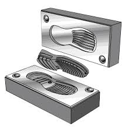
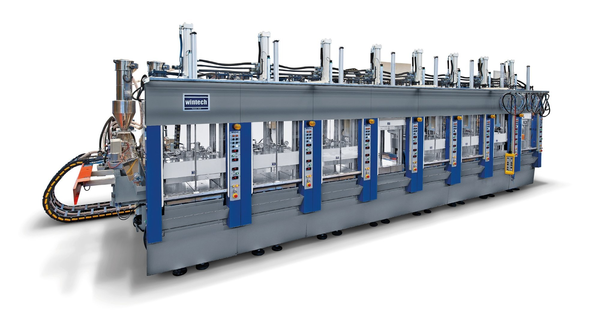

The Production Planning Software (PPS) is an internal Flask-based application developed to support daily mould and machine planning across manufacturing units. The system converts dealer requirements and historical sales patterns into structured production schedules.
The platform enables planners to determine which moulds and machines should be used for each product and how production should be sequenced throughout the day. By automating this process, the software reduces manual coordination and ensures more consistent production planning.


Before the introduction of PPS, production planning was handled manually by plant level teams.
Demand requirements from different states were received through Excel sheets and production plans were prepared through manual discussions between sales and production teams.
• Production demand received from multiple regions
• Planning performed manually using Excel
• Frequent phone coordination between departments
• Sudden production changes caused machine downtime
• Inefficient mould changes during peak production
These challenges created delays in production planning and increased operational complexity within manufacturing units.
The Production Planning Software was developed to automate and standardize the planning process.
• Dealer demand integrated into centralized planning system
• Historical sales data used to guide production decisions
• Automated generation of daily mould and machine schedules
• Clear production sequencing for operators and planners
The system ensures that the correct moulds and machines are allocated for each product while maintaining continuous machine utilization.
The application is built using a lightweight Flask architecture designed for controlled internal usage.
• Demand inputs collected from dealer order requirements
• Historical sales patterns used for demand validation
• Production schedules generated for mould and machine usage
• Interface used by planners during daily planning windows
The system supports different machine types and plant configurations such as linear and circular layouts.
The implementation of PPS significantly improved operational efficiency within production planning teams.
• Planning time reduced by nearly 90%
• Elimination of manual coordination delays
• Improved machine utilization
• Clear visibility of production schedules
• Better alignment between demand and production output
Production plans that previously required half a day to finalize can now be generated quickly with structured data inputs.